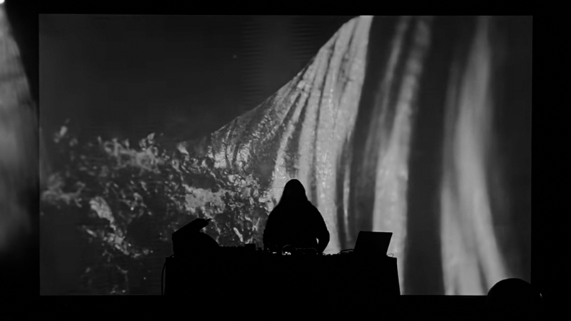

NATI INFINITI
A live performe audio-visual piece
Music by Alessandro Cortini
Visual art by Marco Ciceri
Duration 50'

Nati Infiniti concept
UPCOMING SHOWS
Mutek - Montreal - Canada
Atonal Festival - Berlin - Germany

Press packTechical rider
Booking contact
BIO
Bio Alessandro
Marco Ciceri
Marco Ciceri is a Berlin-based Italian media artist.
He studied at the Faculty of Design and Art at the Free University of Bozen/Bolzano, in which his thesis, “Reality”, he created an installation that exposed the ever more pres- ent difference between live and mediated reality.
In 2014 Ciceri worked with London-based studio Marshmallow Laser Feast on an installation commissioned by the Lisbon Architecture Biennale. In 2015 he moved to Berlin to become part of the motion graphics studio Pfadfinderei. With them, Ciceri worked on live shows for various musicians such as Moderat, Paul Kalkbrenner, and Recondite. He also participated in the creation of visual installations at venues and festivals, including Berghain, Melt, MIT Boston, Funkhause, Primavera Sound, Sonar, ADE and Martin-Gropius-Bau. In his career, he also held workshops about visual music at the Goethe Institut Indonesia in Jakarta and at the Bauhaus-Universität Weimar.
Since 2016 he has had a tight partnership with the musician Grand River, with whom he created an audio-video performance called “0.13%” about the relationship be- tween humans and nature; a topic always present in both artists’ work. They have performed the show at various events such as Mutek, Transart, and Mapping Festival. Ciceri also curates the graphic design for One Instrument, the record label Grand River runs. While working with studios Ciceri also worked independently participating with installations and live performances in several international events and venues including Terraforma, Nextones, Berliner Philharmoniker, C2C, and Circle Of Light. He has continued his partnership with Grand River and has started a new collaboration with Alessandro Cortini.
In his works, Ciceri mixes different media and techniques to achieve richness in the details and what he calls a “flowing esthetic”. For his animations, he often uses automated movements created with generative software or physical motorized gears.
2023